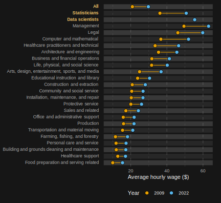

Hal R. Varian, the Chief Economist of Google stated back in 2009 that “the sexy job in the next 10 years will be statisticians.”
Original blog post (Hungarian) available at: Economania
This prediction has partly stood the test of time, but with some clarification. The average salaries of statisticians in the USA between 2009 and 2022 have grown less than the average salary itself, but a new profession has emerged (at least new to statistical records), which Varian might have actually been referring to. They are none other than data scientists, whose salaries in 2022 were surpassed only by those of managers and legal professionals.

But why is a data scientist so valuable? And why will they become increasingly valuable?
Firstly, in our everyday lives, we are generating more and more data, which implies that there is an increasing demand for data processing in various fields. Furthermore, not only are we recording more data, but with the advancement of science, we are also able to analyze a wider variety of data. This is partly due to the fact that our computational capacities are increasing every year, so we don’t need to be deterred by tasks that involve high complexity. Additionally, we are finding methodological solutions to an increasing number of problems related to data analysis.
The distinction in the statistical record between statisticians and data scientists is based on the following (U. S. Bureau of Labor Statistics 2022). The role of statisticians involves “developing or applying mathematical or statistical theories and methods to collect, organize, interpret, and summarize numerical data in order to provide usable information.” In contrast, a data scientist “develops and implements a range of techniques or analytical applications to transform raw data into meaningful information using data-oriented programming languages and visualization software. Applies data mining, data modeling, natural language processing, and machine learning to extract and analyze information from large structured and unstructured datasets.”
This approach aligns with what Breiman (2001) proposed at the beginning of the century. The author divided researchers working with data into two main camps: (1) stochastic modelers (Data Modeling Culture, DMC) and (2) algorithmic modelers (Algorithmic Modeling Culture, AMC). The difference between the two groups lies in how they approach the relationship between variables. The first camp assumes some relationship between the two variables, which is described as x generating y, but with some noise (unexplained random factor) included. According to Breiman (2001), at the time of writing, 98% of statisticians followed this direction, despite the dominance of the AMC approach in all other areas of statistical science.
On the other hand, the other camp (AMC) does not want to describe the “data generating process” that gives x to y, but rather creates an algorithm that estimates the target variable properly. This includes neural networks and tree-based models, which were considered new in the 80s. These tools have reached a level by the beginning of the century where they are capable of speech recognition, image recognition, and predicting nonlinear time series, while the tools of the DMC camp would never be suitable for this.
The difference between the two approaches can be described with the example of detecting a fake card. The DMC analyst pays attention to a few variables and looks for a presumed data generating process, which in this case is the dealer’s hand. In a five-card poker game, we know that the probability of having a pair or a stronger combination in the other hand is close to 50%. A typical DMC player would accuse us of cheating if there is no pair in the first five games, as the probability of this happening is only 3%, assuming that we truly receive the cards randomly from the dealer.
On the other hand, the AMC player uses all possible information in order to provide the best estimate: the player’s age, accent, sleeve width, number of sips taken. For the estimation, they simply look at which players cheated before and use a complex algorithm to find patterns that can expose the cheaters.
Both approaches have their advantages and disadvantages. The DMC tests a specific theory, which is why it is the leading approach in scientific discourse (scientific hypothesis deduction). Of course, in this camp as well, if a theory does not seem to be supported, they change the function and conduct another test1, but the goal is always to test the theory and interpret the results.
The goal of AMC is to create an algorithm that can determine in most cases whether we are dealing with a cheater, giving less importance to the reason why we think they are cheating. However, this approach often proves useful in practice because we typically have a lot of historical data to build on, while coming up with a data-generating process behind complex processes is usually misleading. Although variable importance (VIP) indicators are not new (already mentioned by Breiman (2001)), these methodologies cannot easily capture the data-generating function in an interpretable way, such as “how much does the expected y increase if x increases by one unit”.
The “cultural difference” described by Breiman has partly changed 20 years later. Daoud and Dubhashi (2020)’s reflective article explains in detail that the dominant role of DMC has decreased in recent decades and a new hybrid culture has emerged. This new direction already applies machine learning tools to analyze causal effects and has developed techniques to make the results easily interpretable.
Regardless of the approach chosen, it is important to have a thorough understanding of the methodologies because pitfalls are present everywhere. The spread of statistical software packages began in the 1970s, along with the demand for software reproducibility (Diggle 2015). Publishing an answer to a complex problem in a journal read only by a few professionals is no longer a solution. The demand and pressure for open access and reusable solutions have emerged. Today, there are user-friendly implementations of numerous complex algorithms that allow us to produce results even if we only understand the program’s intuition, or even less2.
The latter is a source of many problems. The uncritical but convenient application of machine learning tools can lead to as many erroneous conclusions3 as drawing conclusions where the p-value was below the 5% significance level, but the data did not meet the model assumptions4. Therefore, it is important in every field that those performing data analysis are well-trained in their respective areas.
Therefore, data analysis procedures are becoming increasingly complex nowadays in order to provide solutions to a growing number of problems. Those who can keep up with the development of these models will see an increasing demand for their knowledge.
References
Footnotes
“Econometrics is not just the humble servant daughter of economic theory.” (Maddala 2001)↩︎
An example of this is the
parsnipadd-on implemented in the R programming language, which allows users to simply select the model(s) they want to apply through a menu-driven interface, and it’s almost ready.↩︎For example, tree-based models generate particularly poor forecasts when encountering non-stationary time series, despite being at the top of the predictive leagues under “normal circumstances”.↩︎
For instance, imagine playing five-card poker in such a way that you can keep 2 cards at the end of each round. In this case, there is a 50 percent probability (we never put back the pair we got in the first round) that we will be called a cheater, if the condition is still that there should be at least one round where we don’t have a pair.↩︎